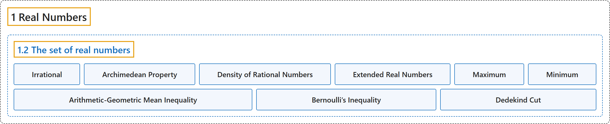

1.2 The set of real numbers
Classification

Glossary
| Term | Definition | 中文翻译 | Source |
|---|---|---|---|
| 1.2 The set of real numbers 实数集 |
(No definition) | （无定义） | Lebl, 2026, section 1.2 |
| Irrational 无理数 |
"The set \(\mathbb{R} \setminus \mathbb{Q}\) is called the set of irrational numbers." | 集合 \(\mathbb{R} \setminus \mathbb{Q}\) 称为无理数集。 | Lebl, 2026, section 1.2 |
| Archimedean Property 阿基米德性质 |
"(Archimedean property) If \(x, y \in \mathbb{R}\) and \(x > 0\), then there exists an \(n \in \mathbb{N}\) such that \(nx > y\)." | （阿基米德性质）若 \(x, y \in \mathbb{R}\) 且 \(x > 0\)，则存在 \(n \in \mathbb{N}\) 使得 \(nx > y\)。 | Lebl, 2026, Theorem 1.2.4 |
| Density of Rational Numbers 有理数的稠密性 |
"(\(\mathbb{Q}\) is dense in \(\mathbb{R}\)) If \(x, y \in \mathbb{R}\) and \(x < y\), then there exists an \(r \in \mathbb{Q}\) such that \(x < r < y\)." | （\(\mathbb{Q}\) 在 \(\mathbb{R}\) 中稠密）若 \(x, y \in \mathbb{R}\) 且 \(x < y\)，则存在 \(r \in \mathbb{Q}\) 使得 \(x < r < y\)。 | Lebl, 2026, Theorem 1.2.4 |
| Extended Real Numbers 扩展实数 |
"The statements in the definition above follow naturally if, instead of working in the ordered set \(\mathbb{R}\), we take suprema and infima in the ordered set \(\mathbb{R}^* := \mathbb{R} \cup \{ -\infty , \infty\}\), where we let \(-\infty < \infty\) and \(-\infty < x\) and \(x < \infty\) for all \(x \in \mathbb{R}\). The set \(\mathbb{R}^*\) is called the set of extended real numbers." | 如果不在有序集 \(\mathbb{R}\) 中，而是在有序集 \(\mathbb{R}^* := \mathbb{R} \cup \{ -\infty , \infty\}\) 中取上确界和下确界，其中令 \(-\infty < \infty\)，并且对所有 \(x \in \mathbb{R}\) 有 \(-\infty < x\) 和 \(x < \infty\)，那么上面定义中的说法就自然成立。集合 \(\mathbb{R}^*\) 称为扩展实数集。 | Lebl, 2026, section 1.2 |
| Maximum 最大值 |
"When a set \(A\) of real numbers is bounded above and \(\sup\, A \in A\), we can use the word maximum and the notation \(\max\, A\) to denote the supremum." | 当实数集 \(A\) 上有界且 \(\sup\, A \in A\) 时，我们可以用最大值一词和记号 \(\max\, A\) 来表示上确界。 | Lebl, 2026, section 1.2 |
| Minimum 最小值 |
"Similarly for infimum: When \(A\) is bounded below and \(\inf\, A \in A\), we can use the word minimum and the notation \(\min\, A\)." | 下确界也类似：当 \(A\) 下有界且 \(\inf\, A \in A\) 时，我们可以用最小值一词和记号 \(\min\, A\)。 | Lebl, 2026, section 1.2 |
| Arithmetic-Geometric Mean Inequality 算术–几何平均不等式 |
"Prove the arithmetic-geometric mean inequality. For two positive real numbers \(x,y\), \(\sqrt{xy} \leq \frac{x+y}{2}\). Furthermore, equality occurs if and only if \(x=y\)." | 证明算术–几何平均不等式：对两个正实数 \(x,y\)，\(\sqrt{xy} \leq \frac{x+y}{2}\)。此外，等号成立当且仅当 \(x=y\)。 | Lebl, 2026, Exercise 1.2.7 |
| Bernoulli’s Inequality 伯努利不等式 |
"Prove Bernoulli’s inequality: If \(1+x > 0\), then for all \(n \in \mathbb{N}\), we have \((1+x)^n \geq 1+nx\)." | 证明伯努利不等式：若 \(1+x > 0\)，则对所有 \(n \in \mathbb{N}\) 有 \((1+x)^n \geq 1+nx\)。 | Lebl, 2026, Exercise 1.2.13 |
| Dedekind Cut 戴德金分割 |
"Let \(A \subset \mathbb{Q}\) be a nonempty set that is bounded above such that whenever \(x \in A\) and \(t \in \mathbb{Q}\) with \(t < x\), then \(t \in A\). Further suppose \(\sup\, A \notin A\). A set such as \(A\) is called a Dedekind cut." | 设 \(A \subset \mathbb{Q}\) 是上有界的非空集合，且只要 \(x \in A\)、\(t \in \mathbb{Q}\)、\(t < x\)，就有 \(t \in A\)；再设 \(\sup\, A \notin A\)。像 \(A\) 这样的集合称为戴德金分割。 | Lebl, 2026, Exercise 1.2.15 |
References
Lebl, J. (2026). Basic analysis I & II: Introduction to real analysis (May 22, 2026 edition). Retrieved October 29, 2026, from https://www.jirka.org/ra/html/